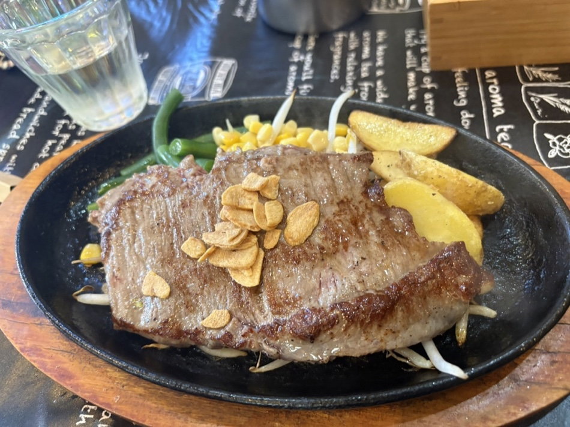
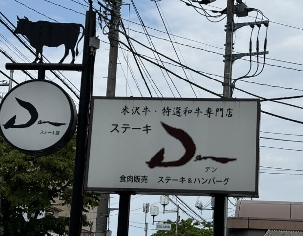
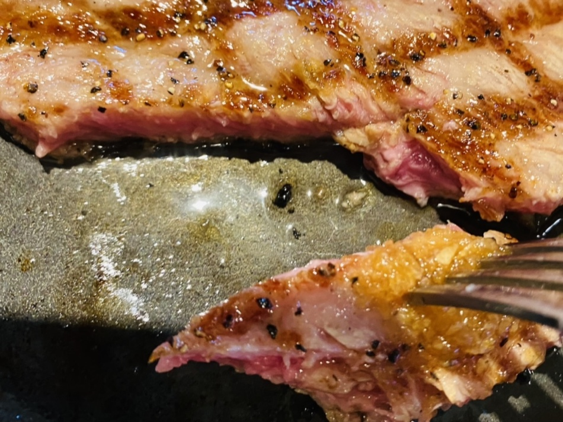
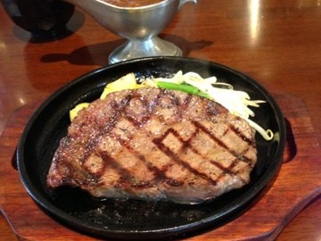
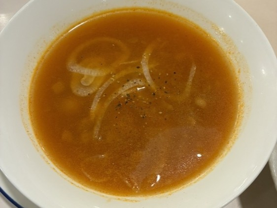
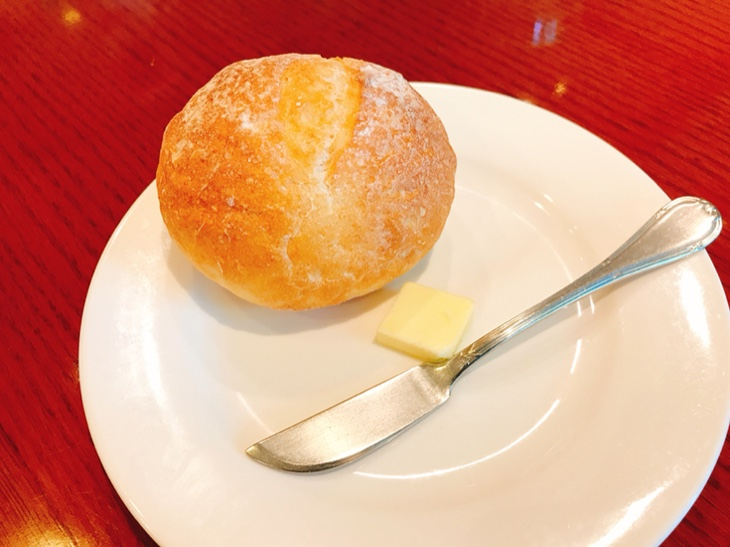
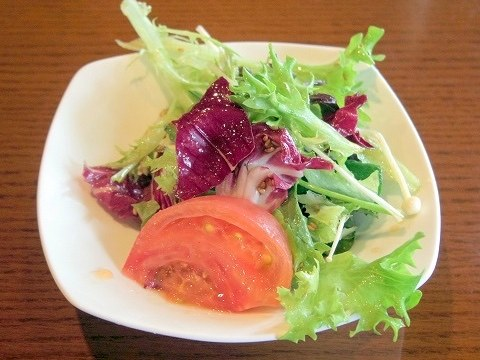
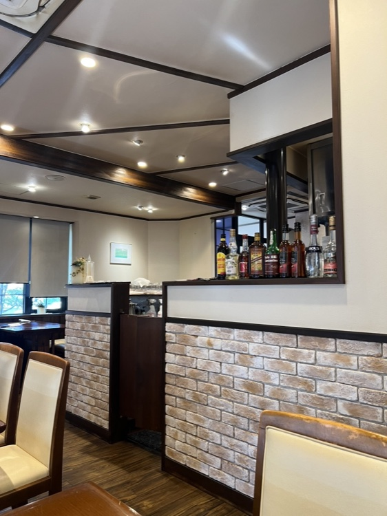
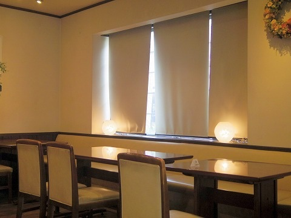
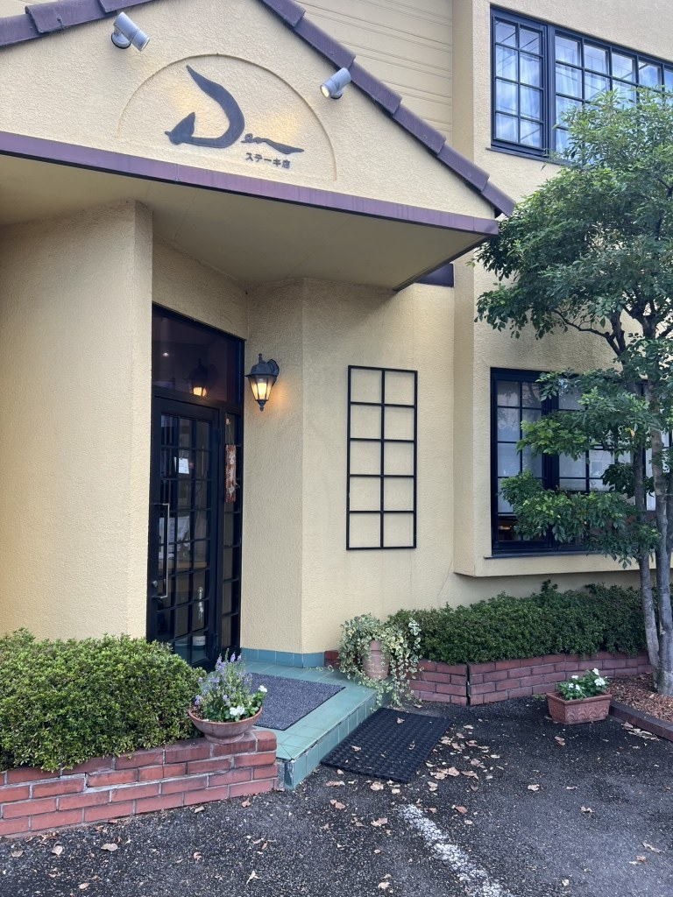

定休日 火曜日 ／ 駐車場は店舗前にございます
古河の住宅街で、米沢牛と特選和牛の、ステーキとハンバーグをお出ししております。
気取らない構えの店です。どうぞ普段着でお越しください。

米沢牛・特選和牛専門店
ステーキ Den
米沢牛を、直接仕入れております。なかでも最高級ランク、A5の牝。きめの細かさと味の濃さ、とろける食感を、まずは一度お確かめください。

STEAK
焼き加減は、お好みのままに承ります。塩と胡椒で下味をつけ、ソースは別の器に添えておりますので、まずはそのまま一口、肉の味からどうぞ。


HAMBURG / MIXED GRILL
ハンバーグは、和牛百パーセント。米沢牛も挽き込んでおります。ステーキもハンバーグも、という日には、ミックスグリルをどうぞ。
SET
ステーキにも、ハンバーグにも、洋食のセットと和食のセットをお付けいただけます。その日のお腹と気分で、お選びください。



INTERIOR
テーブル席のほかに、個室もご用意しております。お子さま連れのご家族や、まわりを気にせずお話しになりたい日には、個室をお申し付けください。個室のご利用やご人数は、お電話でご相談ください。


VOICE
「ランチには少し贅沢ですが、サーロインランチをミディアムレアでいただきました、もちろんめっちゃ美味しいです、口の中でとろけてなくなっちゃいました」
お客様の声より
「厚みがあり、とても柔らかい肉です。あまり噛まないうちに、口の中で脂がとろけ、旨味が一気に広がります。」
お客様の声より
「付け合わせのじゃがいもが表面カリッと中はしっとりしていて美味しかったです。手を抜いてない感じですね。」
お客様の声より
RESERVE
お席のご予約を、お電話で承っております。混み合う時間帯もございますので、ご予約いただけますと確実です。
ランチ限定のおすすめの品は、サービス価格でのご提供のため、カードをお使いいただけません。あらかじめご了承ください。
お祝いのお席やご会食も、お電話でご相談ください。
ACCESS
古河駅東口から、歩いて20分ほど。古河一高の近く、朝日温泉のそばでございます。店の前に駐車場がございますので、お車でもどうぞ。
| 住所 | 〒306-0012 茨城県古河市旭町2-11-2 |
|---|---|
| 電話 | 0280-32-0299 |
| 営業時間 | 11:30〜14:00（L.O. 13:20） 17:30〜21:00 |
| 定休日 | 火曜日 |
| お席 | テーブル席・個室 |
| 駐車場 | 有（店舗前） |
| お支払い | 現金・クレジットカード（税込11,000円以上） |

火を入れるのは、ご注文をいただいてから。焼き上がりまでの少しの時間も、ごちそうのうちでございます。本日も、鉄板を温めてお待ちしております。